Franklin Gothic, first designed by Morris Fuller Benton in 1902 for American Type Founders, was named after Benjamin Franklin who was a typesetter himself. In 1980, however, Victor Caruso created a variant known as ITC Franklin Gothic, which has greater variety in weight and is slightly narrower with a larger x-height. There is also an existing “Cyrillic” version, which is significantly narrower than its predecessors. After its rise in popularity, Franklin Gothic is now a classic sans-serif typeface, most popularly seen in Time Magazine, The New York Times, Scrabble, Bank of America’s logo, and Star Wars. Franklin Gothic is most distinguishable by its double-storey a and g, which is rare to find amongst sans-serifs.
Trade Gothic
Trade Gothic, first designed by Jackson Burke in 1948 for Linotype in the US, is commonly referred to as American Gothic. The family has three weights and three widths in total, making for a very versatile typeface. Trade Gothic is most famously seen in Vice, and other popular books, magazines, and newspapers. When put side by side with Franklin Gothic, it is noticeably more condensed, which sharper counters. Overall, these distinctions give Trade Gothic some character which make it notable in a sea of other various sans serif typefaces. In 2008, a variation of Trade Gothic was created called “Trade Gothic Next”, which adds revisions to each character’s terminals and stroke endings.
Comparison
Similarities
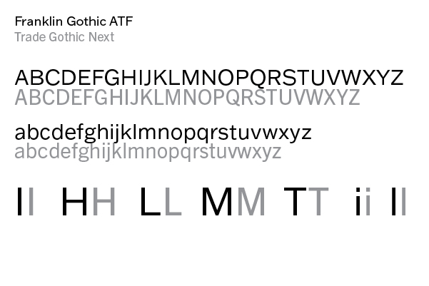
When placed side by side, Franklin Gothic and Trade Gothic appear strikingly similar in weight. Thus, angular characters like capital "I", "H", "L", and "M" look almost identical.
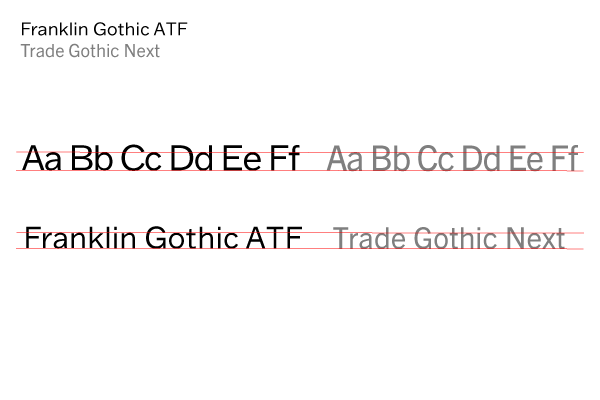
Although Trade Gothic appears taller than Franklin Gothic, when lined up they actually have very similar x-heights.
Differences
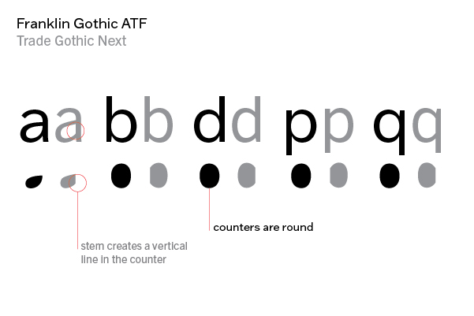
Most noticeably in its lowercase characters, Franklin Gothic has smoother counters. In contrast, Trade Gothic's counters have sharp edges created by certain letter stems.Trade Gothic is noticeably more condensed than Franklin Gothic. Above shows Trade Gothic with added leading to align with Franklin Gothic.
Examples and visual references
Franklin Gothic
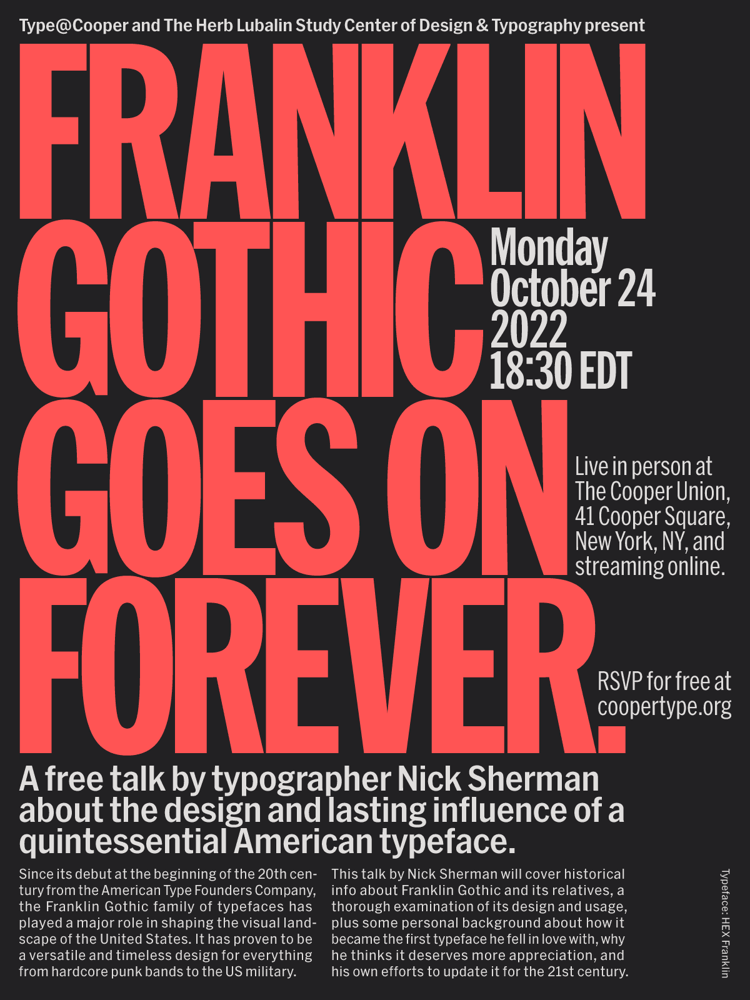
'Franklin Gothic Goes on Forever' lecture fliers presented by Nick Sherman.
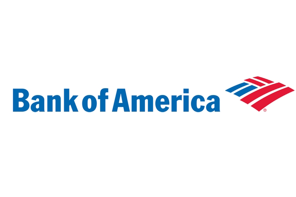
Franklin Gothic Condensed featured in the iconic Bank of America logo.
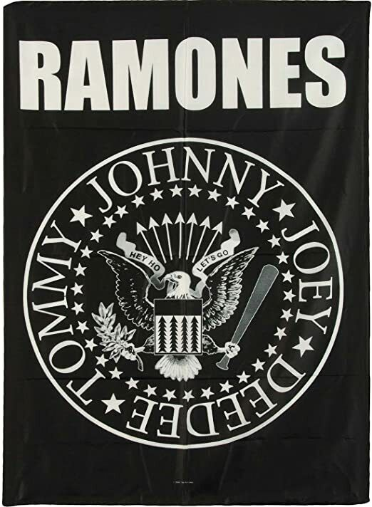
The Ramones, a US punk band, uses Franklin Gothic Heavy as their logo.
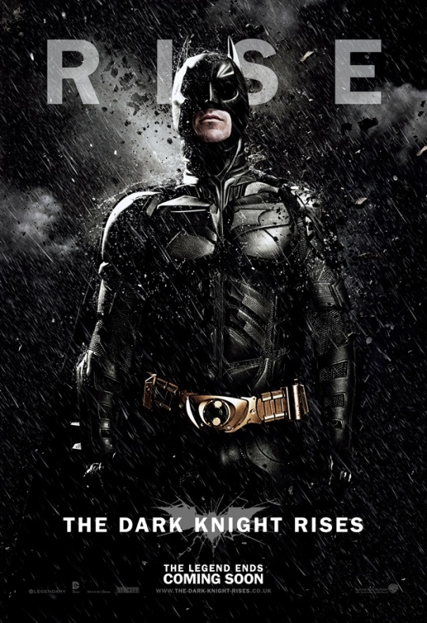
Franklin Gothic Heavy used in The Dark Knight Rises, 2012 poster.
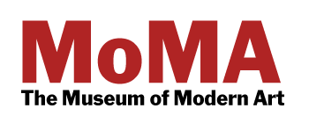
Inspired by Franklin Gothic, the Museum of Modern Art adapted the typeface into a slightly different typeface of their own called MoMA Gothic.
Trade Gothic
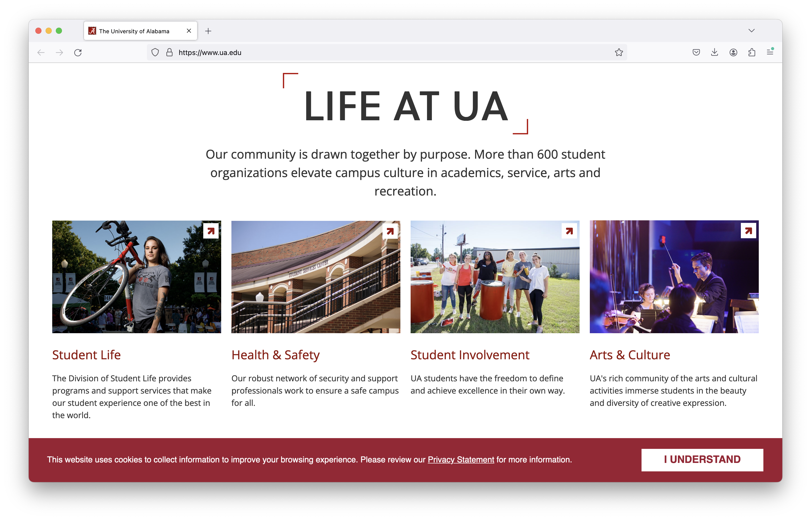
The University of Alabama features Trade Gothic as a primary and body typeface within its website.Spanish clothing retailer "Bershka" uses Trade Gothic Roman as a clean and simple logo.United Methodist Church uses Trade Gothic Condensed in some variations of its logo as a creative way to prevent them from becoming disproportionately long.
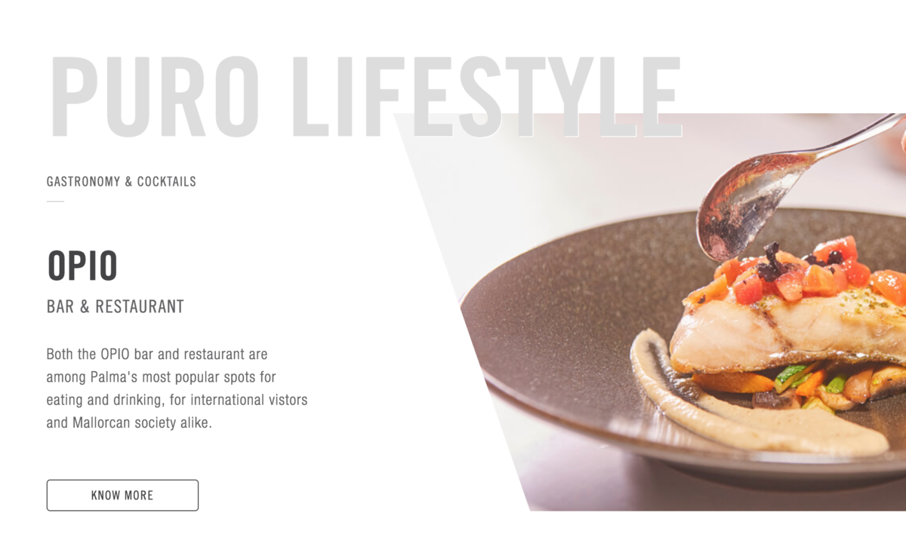
The Puro Hotel interestingly uses Trade Gothic in conjunction with a similar sans-serif, Helvetica Neue in their website.
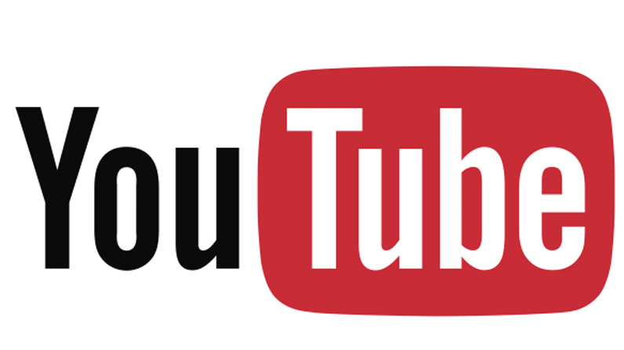
While the typeface has been slightly tweaked over the years into 'Youtube Sans', Trade Gothic Condensed was originally used.